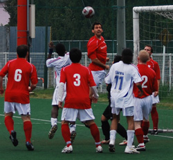
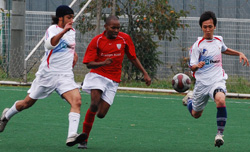

|
 Hachioji Park, Monday 3rd November Hachioji Park, Monday 3rd November
BFC’s season seems to have hit a snag after they were caught out by some very physical and hungry Lions. BFC have also made it a habit of not writing match reports when they lose. But this time, instead of claiming amnesia or lack of visual acuity, BFC will humbly eat pie this week and accept the “shame.” We were well and truly beaten.
The match had many talking points and bizarre events and I will skirt around many of them as decorum requires. Guess who the referee was. There was even blood as the mighty Norse god Garry needed stitches from a collision of heads early in the first half. It didn’t look malicious but it was pretty obvious that the word outmuscle must have been uttered their teamtalk several times. After the ten-minute minor surgical operation, Doctor Doyle pulled off his gloves and asked his supporting cast to get their own heads back into the game but we all begged to differ. A clearcut chance was sliced wide from a few yards out and other two went very close. Their keeper also had a terrific save from a great Jon Day shot and few keepers in the league could have kept that one out. But apart from that, we were generally shite in the first half, looked clueless going forward and too many times asked the Lions to please take any 50-50 chances.
They did, but besides winning possession mainly in midfield, putting ten men behind the ball and deploying a very tall and gangly striker upfront to lump all sorts of balls at, they didn’t seem to have a plan either.
 Halftime talk stressed the old mantra of patience, ball to feet and matching the opposition’s strength in challenge. However, the Lions had clearly seen a sniffed something in the first half and came out relishing the battle in the second. Their energy never once flagged and their linesman’s flag never once sagged. Their midfield continued to hustle and it paid off with about twenty minutes to go. BFC were camping inside the Sudanese territory and the tide was so high that when another BFC attack broke down and the ball was played to the lone striker upfront, our linesman almost flagged it only to realize their man was still 10 yards in his own half! He might be tall and gangly but he showed amazing speed and cool head to tap it past a stranded keeper. Should he have come out? Should we have lost the ball that easily? Should the line have been that high? Should we, could we…There is enough blame to go around.
Panic didn’t descend and we did keep hammering away. The Lions fortified their walls and their energy levels were now getting dangerously stellar. One overeager and perhaps rash challenge on Pabs left the referee with no other imaginable choice whatsoever, in any ground anywhere in the world, but to give a red card. The resulting freeckick from Carlos was beautifully whipped in and zipped over the wall and down low but Orlando in goal was up to the challenge. Quickly got down to his right to beat it away for almost a throw in. We all wish we had tried harder to poach him.
 Then followed a series of the bizarre events. One was their keeper rarely misjudging a great cross from Dan but Jon was unlucky with his header that came down with fury off the ground and past the post. Another was Pabs being sandwiched between two defenders as he was clear on goal. He came down in the box amid the pushing and shoving and jostling and shirt grabbing….and the keeper calmly collected the ball.
Pabs you should be ashamed of yourself for diving. Football is a game of gentlemen. Another attack saw a cross evade everybody but Ryo sprinted to get to the byline and cut it back to Evs who tapped it past the keeper in the near post. The flag was now actually mounted on a pole and planted firmly on the ground with no one in sight, so the ref consulted the pole. Several theories emerged. One was offside, One was that the ball had gone out of action. Someone even suggested was Evs leg could be the leg of God!! After great deliberation the goal
was disallowed.
We didn’t play well at all and definitely didn’t deserve to win. The Lions had the heart, the bite, the hustle, and a very young skillful team. They are certainly no pushovers and playing to their strengths didn’t do us any favors. Are they the Hull or Stoke city of our league? Meanwhile BFC’s assault this year seems to have been halted and questions will be asked. Big heads? Just get our heads down and back to basics? Capello style clampdown on all Kabukicho shenanigans? As Hibs run riot while YCAC plod along firmly, should we forget about the league and just enjoy playing football? Or maybe give it a good go against Hibs and see what happens?
Match report by Para Maxico
|